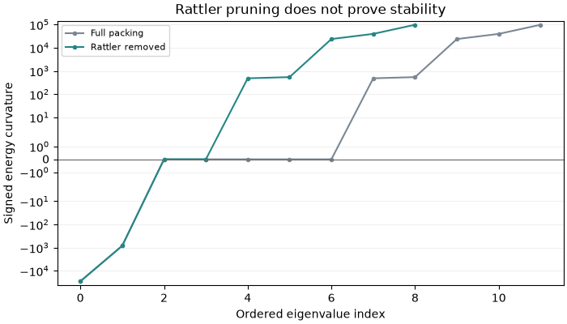
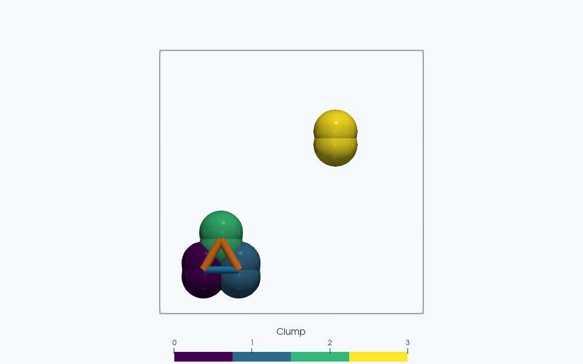

Note
Go to the end to download the full example code.
Find rattlers and draw a contact network#
Which grains participate in a packing’s contact network, and does an isolated
grain change its pressure? Build four small two-disk clumps, remove the isolated
one, and compare the results with
analyze_packing().
The positions are prescribed: this example analyzes one snapshot without running dynamics or minimizing it. Eight disks keep the calculation small.
import jax.numpy as jnp
import matplotlib.pyplot as plt
import numpy as np
import jaxdem as jd
from jaxdem.utils import analyze_packing
Make three contacting clumps and one isolated clump#
Each clump contains two overlapping disks. Supply their union area as the
body volume so packing_fraction
does not count the internal overlap twice. The periodic box stays the same
throughout the comparison. create() and
create() construct the configuration below.
centers = np.array([[1.0, 1.0], [1.8, 1.0], [1.4, 1.7], [4.0, 4.0]])
offsets = np.array([[0.0, -0.15], [0.0, 0.15]])
clump_area = 0.5 * np.pi - 0.5 * np.arccos(0.3) + 0.15 * np.sqrt(1 - 0.3**2)
state = jd.State.create(
pos=np.repeat(centers, 2, axis=0),
pos_p=np.tile(offsets, (4, 1)),
rad=jnp.full(8, 0.5),
volume=jnp.full(8, clump_area),
clump_id=np.repeat(np.arange(4), 2),
)
system = jd.System.create(
state=state,
collider_type="naive",
domain_type="periodic",
domain_kw={"box_size": jnp.full(2, 6.0)},
)
Remove rattlers and compare two measurements#
A rattler has too few contacts to survive the chosen contact-count pruning; removal is repeated because removing one body may put another below the threshold. Here the isolated clump is the only rattler. The two species labels on the contacting cluster will later let us distinguish within-species contacts from contacts between species. These labels affect analysis, not the force law.
analyze_packing() uses the configured
collider and returns matching PackingData
objects for the full and non-rattler configurations. It also computes dense
energy Hessians and their spectra on every call: storage grows quadratically
with the number of coordinates, so this convenience function suits small
configurations. This example needs only 12 coordinates before removal.
analysis = analyze_packing(state, system, clump_species_ids=[0, 0, 1, 2])
full = analysis.full
remaining = analysis.non_rattlers
full.system.check_overflow()
remaining.system.check_overflow()
print("Removed input clump IDs:", np.asarray(analysis.rattler_ids))
print(
f"Packing fraction: {float(full.packing_fraction):.4f} -> "
f"{float(remaining.packing_fraction):.4f}"
)
print(
f"Contact pressure: {float(full.pressure):.4f} -> "
f"{float(remaining.pressure):.4f}"
)
assert np.array_equal(analysis.rattler_ids, [3])
assert np.isclose(remaining.packing_fraction, 0.75 * full.packing_fraction)
assert np.isclose(remaining.pressure, full.pressure)
Removed input clump IDs: [3]
Packing fraction: 0.1201 -> 0.0901
Contact pressure: 234.0382 -> 234.0382
Removing one of four equal-volume clumps reduces the packing fraction by
one quarter. Pressure stays unchanged: the isolated clump carried no contact
force. This pressure
is contact virial pressure, without kinetic or wall contributions.
For subsequent queries, keep the returned
state and
system together; the
system contains refreshed search caches. Check
check_overflow() after a completed analysis or
simulation chunk, especially when replacing the naive all-pairs collider
with a spatial search that has limited capacity.
state, system = remaining.state, remaining.system
Count contacts between species#
clump_contacts stores
directed pairs: each physical edge appears as both \((I,J)\) and
\((J,I)\). Select \(I<J\) to count or draw it once. For \(N_b\)
bodies and \(N_c\) distinct body-pair edges, mean body coordination is
Several disk contacts may belong to one body-pair edge. Surviving rattler pruning therefore does not prove mechanical stability. This prescribed cluster has negative energy-curvature modes; it is not an energy minimum.
network = remaining.clump_contacts
pairs = np.asarray(network.pair_ids)
species = np.asarray(network.pair_species)
unique = pairs[:, 0] < pairs[:, 1]
same_species = species[:, 0] == species[:, 1]
within = int(np.sum(unique & same_species))
between = int(np.sum(unique & ~same_species))
mean_coordination = 2 * int(unique.sum()) / len(remaining.clump_ids)
print("Within-species edges:", within)
print("Between-species edges:", between)
print("Mean body coordination:", mean_coordination)
print("Negative energy modes:", remaining.negative_mode_count)
assert (within, between) == (1, 2)
assert mean_coordination == 2.0
assert remaining.negative_mode_count > 0
Within-species edges: 1
Between-species edges: 2
Mean body coordination: 2.0
Negative energy modes: 2
Draw the force network#
displacements
points from destination to source using the domain’s periodic image rule.
Draw each edge from \(\mathbf{x}_I\) to
\(\mathbf{x}_I-\mathbf{r}_{IJ}\); joining wrapped center coordinates
directly could draw a long line across a periodic boundary.
Network indices address the returned state. Use
original_clump_ids
when mapping them back to the input. Line width below represents net contact
force
magnitude in the ParaView view, while color distinguishes the two species
comparisons. The isolated fourth clump remains visible for context.
starts = np.asarray(remaining.clump_positions)[pairs[unique, 0]]
ends = starts - np.asarray(network.displacements)[unique]
segments = np.stack((starts, ends), axis=1)
strength = np.linalg.norm(np.asarray(network.forces)[unique], axis=1)
widths = 1.0 + 3.0 * strength / max(float(strength.max(initial=0.0)), 1e-12)
colors = np.where(same_species[unique], "tab:blue", "tab:orange")
Compare geometry, force transmission and stability#
The signed spectrum makes the negative curvature visible: pruning an isolated clump removes its free coordinates, but does not stabilize the contacting cluster. Indices in the two spectra belong to their respective coordinate spaces, rather than matched eigenmodes.
fig, ax = plt.subplots(figsize=(7, 4), layout="constrained")
labels = ["Full packing", "Rattler removed"]
comparison_colors = ["#7b8794", "#258685"]
for data, label, color in zip(
(full, remaining), labels, comparison_colors, strict=True
):
eigenvalues = np.asarray(data.eigenvalues)
ax.plot(
np.arange(eigenvalues.size), eigenvalues, "o-", ms=3, label=label, color=color
)
ax.axhline(0, color="0.4", lw=0.8)
ax.set(
xlabel="Ordered eigenvalue index",
ylabel="Signed energy curvature",
yscale="symlog",
title="Rattler pruning does not prove stability",
)
# Set headroom after selecting the signed scale so every measured endpoint
# remains visible, including the largest positive curvature after pruning.
spectrum_min = min(float(np.min(data.eigenvalues)) for data in (full, remaining))
spectrum_max = max(float(np.max(data.eigenvalues)) for data in (full, remaining))
curvature_scale = max(abs(spectrum_min), abs(spectrum_max), 1.0)
ax.set_ylim(
1.5 * spectrum_min if spectrum_min < 0 else -0.05 * curvature_scale,
1.5 * spectrum_max if spectrum_max > 0 else 0.05 * curvature_scale,
)
ax.legend(fontsize=8)
ax.grid(axis="y", alpha=0.18)
plt.show()


Particles are colored by clump ID. Blue network edges connect equal analysis species; orange edges connect different species. Contact tubes use radii 0.025*(1+3F/Fmax) and are projected in a layer in front of the spheres for visibility; native VTK coordinates remain in the particle plane.
Total running time of the script: (0 minutes 17.280 seconds)